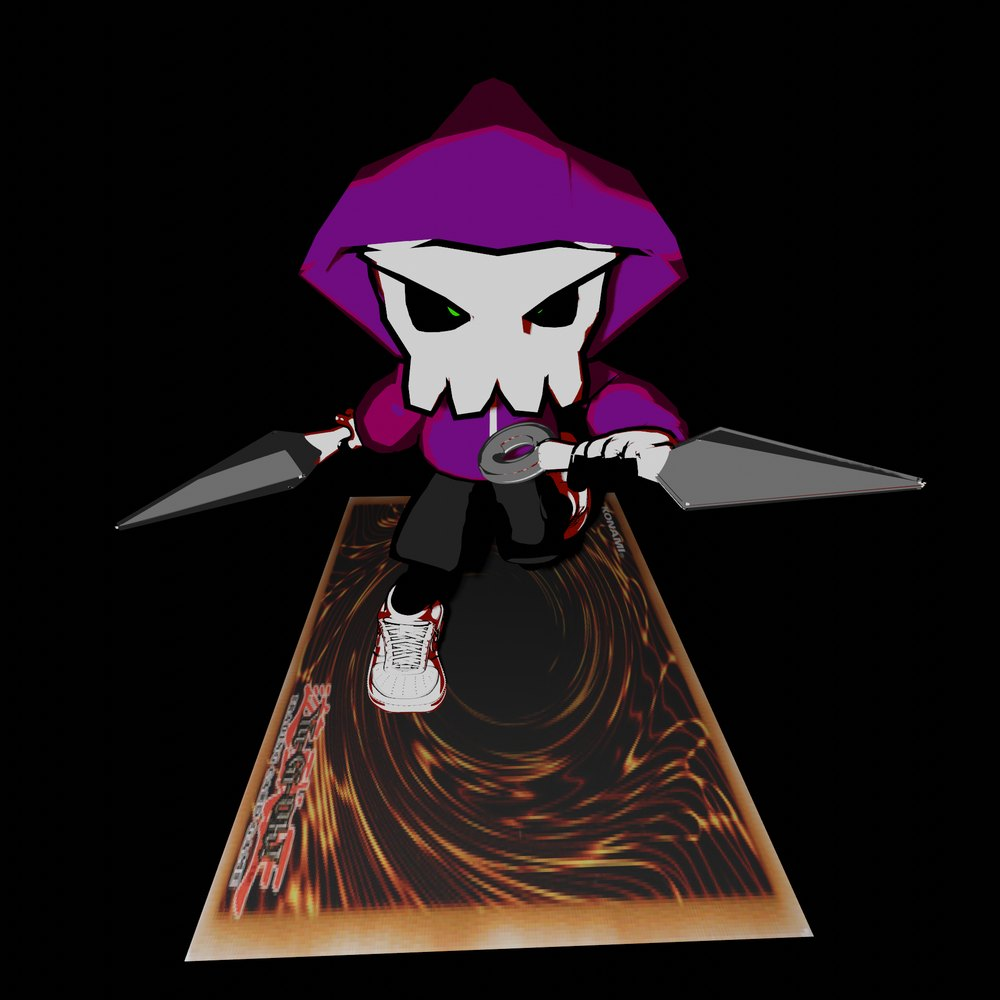
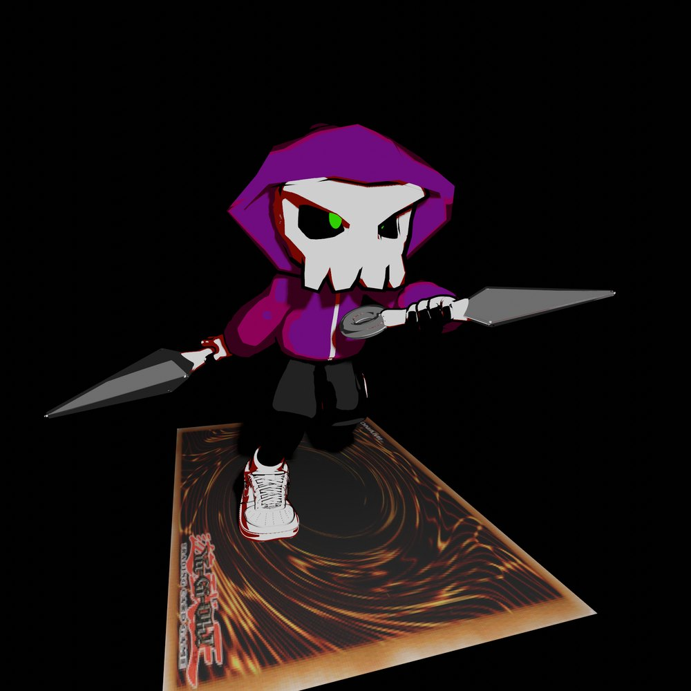
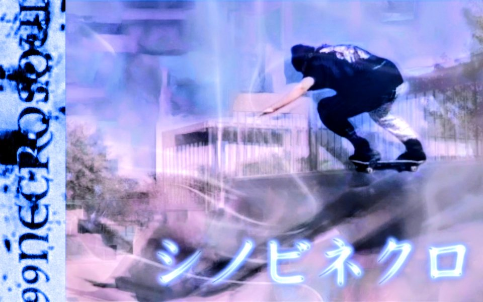
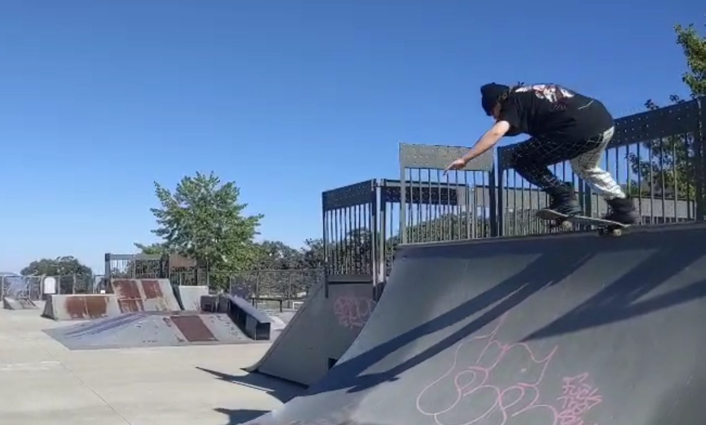
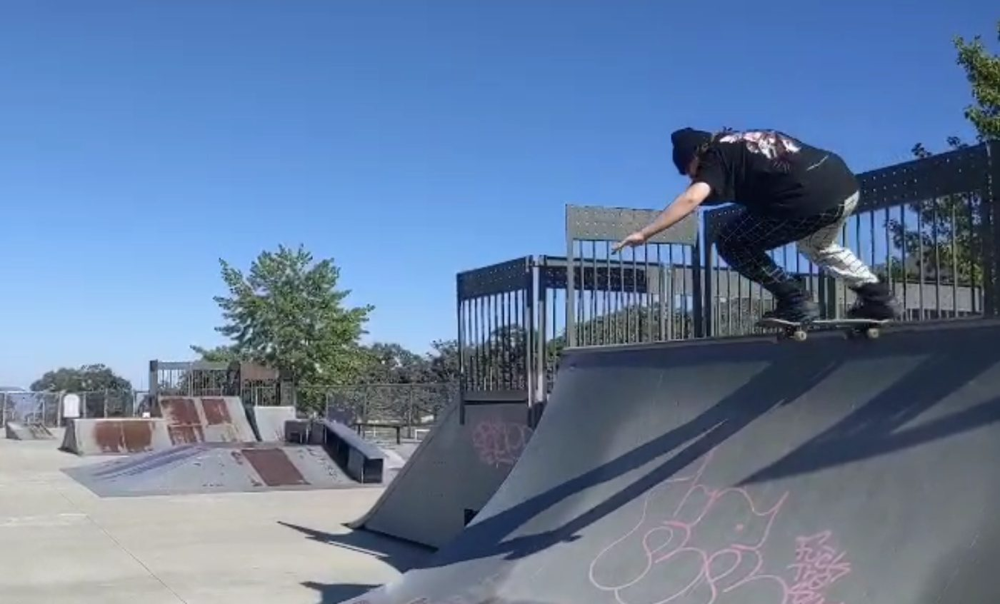

Member · Artist
composer · sound designer · applied computer scientist
Who she is
Violet is an award-winning composer and sound designer with 31 shipped game and film credits, moving fluidly between music, game audio, and film scoring. She is also an applied computer scientist who builds the tools and hardware that make creative work faster, and a builder who folds AI into her pipeline rather than around it. The thread through all of it is the same: take what is overlooked and push it past its supposed limit.
Shipped game and film credits as composer and sound designer.
Disciplines in one practice: music, game audio, film, code, and hardware.
Builds tools and AI-assisted pipelines so the craft moves faster.
Designs and prototypes hardware for sound and interaction.
The persona


viknowsdinosUnder the handle viknowsdinos, Violet trades in a card-game logic that doubles as a way of working: most people grind the proven, expensive line and call it the only path. She takes the decks everyone wrote off as trash, finds the combo that wins before the opponent gets a turn, and arrives first. Skate-art energy, a little glitch, a half-mask and a blade. The same instinct that finds a shortcut through a board finds one through a brief.
Skate art



The full portfolio, the credits, and the latest releases live off-site. The collective's sets are on SoundCloud.